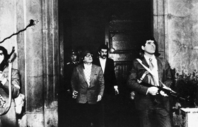

Lezione 20  La guerra fredda
La guerra fredda

Santiago del Cile, 11 settembre 1973. Il presidente cileno Salvator Allende, alla guida di un governo socialista, è nel palazzo presidenziale della Moneda, assediato dai militari golpisti guidati dal generale Augusto Pinochet. La rivolta ha l’appoggio degli Stati Uniti, che temono un’espansione del marxismo nell’America del Sud. Allende parla al suo popolo attraverso la radio. Morirà poco dopo durante l’attacco dei militari.
Mi rivolgo a voi, soprattutto alla modesta donna della nostra terra, alla contadina che credette in noi, alla madre che seppe della nostra preoccupazione per i bambini.
Mi rivolgo alla gioventù, a quelli che cantarono e si abbandonarono all’allegria e allo spirito di lotta.
Mi rivolgo all’uomo del Cile, all’operaio, al contadino, all’intellettuale, a quelli che saranno perseguitati, perché nel nostro paese il fascismo ha fatto la sua comparsa già da qualche tempo; negli attentati terroristi, facendo saltare i ponti, tagliando le linee ferroviarie, distruggendo gli oleodotti e i gasdotti, nel silenzio di coloro che avevano l’obbligo di procedere.
Erano d’accordo.
La storia li giudicherà.
Sicuramente Radio Magallanes sarà zittita e il metallo tranquillo della mia voce non vi giungerà più.
Non importa.
Continuerete a sentirla.
Starò sempre insieme a voi.
Perlomeno il mio ricordo sarà quello di un uomo degno che fu leale con la Patria.
Il popolo deve difendersi ma non sacrificarsi.
Il popolo non deve farsi annientare né crivellare, ma non può nemmeno umiliarsi.
Lavoratori della mia Patria, ho fede nel Cile e nel suo destino.
Altri uomini supereranno questo momento grigio e amaro in cui il tradimento pretende di imporsi.
Sappiate che, più prima che poi, si apriranno di nuovo i grandi viali per i quali passerà l’uomo libero, per costruire una società migliore.
Viva il Cile! Viva il popolo! Viva i lavoratori!
Queste sono le mie ultime parole e sono certo che il mio sacrificio non sarà invano. Sono certo che, almeno, sarà una lezione morale che castigherà la fellonia, la codardia e il tradimento.